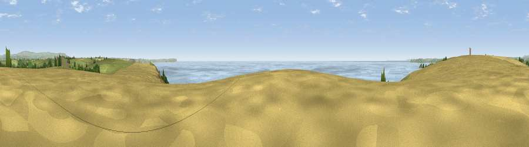

Viewpoint near Newton Ferrers
#2030 in England · top 5% of its area beats it · near Newton Ferrers · path 150 mWhere it is
The exact computed spot (SX 54525 46075). Click the marker for map links.
Public access: the nearest public right of way is about 150 m away — the final stretch may cross private land. Computed from Natural England's CRoW access layer and OpenStreetMap rights of way — not the legal definitive map. Always verify locally.
The view, rendered

A 360° render of this exact spot computed from the terrain model, tree cover and land cover — summer colours, afternoon light, calibrated against photographs of famous viewpoints. Real trees, hedges and buildings will differ in detail.
The panorama
Grey silhouette: terrain skyline in each direction (720 bearings, Earth curvature and refraction included). Dashed green: skyline with trees (+15 m) and buildings (+8 m) as obstacles. Blue strip: how far the ground is visible on each bearing.
Where the view opens
Wedge length = distance to the farthest visible ground on that bearing (vegetation-aware). Rings at 10, 25 and 50 km.
What fills the view
53% water · 22% grassland · 22% cropland · 3% woodland
Angular shares of the visible panorama (visual magnitude), not map area. Landscape diversity 0.49 (0–1 Shannon).
Key numbers
More beautiful places nearby
The staircase of upgrades: each row has a higher view potential than everything closer. Driving times are estimates from straight-line distance, calibrated against real road routing — check an actual route before setting out.
| Place | Direction | Drive | Score |
|---|---|---|---|
| Viewpoint near Newton Ferrers | NW · 1 km | ~2 min | 77.4 |
| Viewpoint near Newton Ferrers | WNW · 2 km | ~5 min | 78.2 |
| Viewpoint near Newton Ferrers | ENE · 3 km | ~7 min | 79.5 |
| Viewpoint near Cawsand | WNW · 12 km | ~23 min | 81.0 |
| Viewpoint near Hope | ESE · 15 km | ~27 min | 84.4 |
| Viewpoint near East Prawle | ESE · 24 km | ~40 min | 84.6 |
| Pencarrow Head | W · 39 km | ~59 min | 86.0 |
| Viewpoint near Stenalees | W · 55 km | ~77 min | 88.0 |
50.29664, -4.04384 · source: screening · position refined by local search. Computed location — check access rights before visiting.